📝 Repaso de la unidad
Actividades de repaso
Escribe tu respuesta y después pulsa «Ver la solución» para corregirla tú. Los puntos dicen el nivel: ● básico, ●●● ampliación.
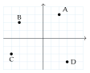
Solución
\(A(2,3)\) I; \(B(-3,2)\) II; \(C(-4,-2)\) III; \(D(3,-3)\) IV.
¿Cómo te ha ido?
Un cuadrado de 4 unidades de lado tiene su centro en el origen y los lados paralelos a los ejes. Escribe las coordenadas de sus vértices.
Solución
\((2, 2)\), \((-2, 2)\), \((-2, -2)\) y \((2, -2)\).
¿Cómo te ha ido?
\(A(4,1)\), \(B(-2,3)\), \(C(0,5)\), \(D(-3,-4)\), \(E(5,-1)\), \(F(-6,0)\), \(G(0,-2)\) y \(H(-1,6)\).
Solución
\(A\): I. \(B\): II. \(C\): eje \(Y\). \(D\): III. \(E\): IV. \(F\): eje \(X\). \(G\): eje \(Y\). \(H\): II.
¿Cómo te ha ido?
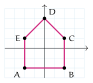
Solución
\(A(-2,-2)\), \(B(2,-2)\), \(C(2,1)\), \(D(0,3)\), \(E(-2,1)\).
¿Cómo te ha ido?
- ¿Qué signo tienen las coordenadas de un punto del tercer cuadrante?
- ¿Cuánto vale la ordenada de cualquier punto del eje \(X\)?
- ¿Cuánto vale la abscisa de cualquier punto del eje \(Y\)?
- ¿En qué cuadrante está un punto con abscisa positiva y ordenada negativa?
Solución
a) Las dos son negativas. b) 0. c) 0. d) En el IV.
¿Cómo te ha ido?
- 3 unidades a la derecha del origen y 2 hacia abajo.
- Sobre el eje \(Y\), 5 unidades por encima del origen.
- Sobre el eje \(X\), 4 unidades a la izquierda del origen.
- 1 unidad a la izquierda del origen y 6 hacia arriba.
Solución
a) \((3,-2)\) b) \((0,5)\) c) \((-4,0)\) d) \((-1,6)\)
¿Cómo te ha ido?
- El punto \((-3,0)\) está en el eje \(Y\).
- Los puntos \((2,5)\) y \((5,2)\) son el mismo punto.
- El origen tiene coordenadas \((0,0)\).
- El punto \((-1,-7)\) está en el tercer cuadrante.
Solución
a) Falso: está en el eje \(X\). b) Falso. c) Verdadero. d) Verdadero.
¿Cómo te ha ido?
Representa los puntos \(A(1,1)\), \(B(5,1)\), \(C(5,4)\) y \(D(1,4)\) y únelos en orden. ¿Qué figura se forma? Calcula su perímetro y su área.
Solución
Un rectángulo de \(4\times 3\): perímetro 14 u y área 12 u\(^2\).
¿Cómo te ha ido?
Tres vértices de un cuadrado son \(A(-1,-1)\), \(B(3,-1)\) y \(C(3,3)\). Halla las coordenadas del cuarto vértice y el área del cuadrado.
Solución
\(D(-1,3)\); área 16 u\(^2\).
¿Cómo te ha ido?
Representa los puntos \(A(-3,2)\) y \(B(3,2)\). ¿Qué distancia hay entre ellos? ¿Qué punto está justo en medio de los dos?
Solución
6 unidades; el punto \((0,2)\).
¿Cómo te ha ido?
- Respecto al eje \(X\).
- Respecto al eje \(Y\).
- Respecto al origen.
Solución
a) \((4,3)\) b) \((-4,-3)\) c) \((-4,3)\)
¿Cómo te ha ido?
En el plano de un pueblo cada cuadrícula mide 100 m. El ayuntamiento está en el origen, el colegio en \((3,2)\), la biblioteca en \((-2,2)\) y el polideportivo en \((3,-4)\).
- ¿Qué distancia hay en línea recta del colegio a la biblioteca?
- ¿Y del colegio al polideportivo?
- Para ir de la biblioteca al polideportivo solo por calles horizontales y verticales, ¿cuántos metros se recorren como mínimo?
Solución
a) 500 m. b) 600 m. c) 1 100 m.
¿Cómo te ha ido?
- ¿Dónde están todos los puntos que tienen ordenada 3?
- ¿Dónde están los puntos que tienen la abscisa igual a la ordenada? Escribe tres.
- ¿En qué cuadrantes están los puntos cuyas coordenadas tienen distinto signo?
Solución
a) En una recta horizontal que corta al eje \(Y\) en 3. b) En una recta que pasa por el origen y atraviesa los cuadrantes I y III; por ejemplo, \((1,1)\), \((-2,-2)\) y \((5,5)\). c) En el II y en el IV.
¿Cómo te ha ido?
Representa el triángulo de vértices \(A(-2,0)\), \(B(4,0)\) y \(C(1,5)\) y calcula su área. Si el vértice \(C\) se mueve al punto \((3,5)\), ¿cambia el área? ¿Por qué?
Solución
15 u\(^2\). No cambia: la base sigue midiendo 6 y la altura, 5.
¿Cómo te ha ido?
- A cada alumno de la clase le corresponde su altura.
- A cada altura le corresponde el alumno que la tiene.
- A cada número le corresponde su cuadrado.
- A cada número positivo le corresponden sus raíces cuadradas.
Solución
a) Sí. b) No. c) Sí. d) No.
¿Cómo te ha ido?
- \(f(0)\)
- \(f(2)\)
- \(f(-1)\)
- \(f\left(\frac{1}{3}\right)\)
Solución
a) \(-4\) b) \(2\) c) \(-7\) d) \(-3\)
¿Cómo te ha ido?
Si \(f(x) = 2x + 1\), ¿para qué valor de \(x\) se cumple \(f(x) = 9\)? ¿Y \(f(x) = -3\)?
Solución
\(2x + 1 = 9\): \(x = 4\). \(2x + 1 = -3\): \(x = -2\).
¿Cómo te ha ido?
- El número de barras de pan que compras y el precio que pagas.
- La altura de una planta y los días que han pasado desde que se sembró.
- El lado de un cuadrado y su área.
- Los litros de gasolina que gasta un coche y los kilómetros que recorre.
Solución
Independiente / dependiente: a) barras / precio. b) días / altura. c) lado / área. d) kilómetros / litros.
¿Cómo te ha ido?
- \(f(0)\)
- \(f(3)\)
- \(f(-2)\)
- \(f\left(\frac{1}{2}\right)\)
Solución
a) \(-1\) b) \(8\) c) \(3\) d) \(-\frac{3}{4}\)
¿Cómo te ha ido?
- \(g(0)\)
- \(g(4)\)
- \(g(-3)\)
- \(g(2{,}5)\)
Solución
a) \(5\) b) \(-3\) c) \(11\) d) \(0\)
¿Cómo te ha ido?
\(x\) 1 2 3 4 \(y\) 5 5 6 7 \(x\) 1 2 2 3 \(y\) 4 5 6 7 \(x\) \(-1\) 0 1 2 \(y\) 1 0 1 4
Solución
a) Sí. b) No: a \(x=2\) le corresponden dos valores. c) Sí.
¿Cómo te ha ido?
| \(x\) | \(-2\) | \(-1\) | 0 | 1 | 2 | 3 |
| \(y\) |
Solución
\(-1\), 1, 3, 5, 7, 9.
¿Cómo te ha ido?
Solución
a) Sí. b) No: hay valores de \(x\) con dos valores de \(y\). c) No: a \(x=1{,}5\) le corresponden infinitos valores. d) Sí.
¿Cómo te ha ido?
Una botella de agua cuesta \(0{,}60\) €.
- Haz una tabla con el precio de 1, 2, 3, 6 y 10 botellas.
- Escribe la expresión algebraica de la función.
- ¿Cuántas botellas se pueden comprar con 9 €?
Solución
a) \(0{,}60\); \(1{,}20\); \(1{,}80\); \(3{,}60\); 6 €. b) \(y=0{,}6x\). c) 15 botellas.
¿Cómo te ha ido?
A cada número le asociamos su doble menos 3.
- Escribe la expresión algebraica de la función.
- Haz una tabla de valores para \(x=-1,0,1,2,3\).
- ¿Qué número tiene como imagen 11?
Solución
a) \(y=2x-3\) b) \(-5\), \(-3\), \(-1\), 1, 3. c) \(x=7\).
¿Cómo te ha ido?
- A cada número le corresponde su triple más 1.
- A cada número le corresponde su cuadrado menos 2.
- A cada número le corresponde su mitad.
- A cada número le corresponde su opuesto más 4.
Solución
a) \(y=3x+1\) b) \(y=x^2-2\) c) \(y=\frac{x}{2}\) d) \(y=-x+4\)
¿Cómo te ha ido?
Dada la función \(f(x) = 5 - 3x\):
- Calcula \(f(2)\) y \(f(-2)\).
- ¿Para qué valor de \(x\) se cumple \(f(x)=-10\)?
- ¿Para qué valor de \(x\) se cumple \(f(x)=5\)?
Solución
a) \(-1\) y \(11\). b) \(x=5\). c) \(x=0\).
¿Cómo te ha ido?
Un fontanero cobra 25 € por el desplazamiento y 30 € por cada hora de trabajo.
- Haz una tabla con lo que cobra por 1, 2, 3 y 4 horas.
- Escribe la expresión algebraica de la función.
- ¿Cuántas horas ha trabajado si ha cobrado 175 €?
Solución
a) 55, 85, 115 y 145 €. b) \(y=30x+25\). c) 5 horas.
¿Cómo te ha ido?
¿Es el perímetro de un rectángulo una función de su área? Es decir, si conoces el área, ¿queda determinado el perímetro? Pon un ejemplo.
Solución
No. Los rectángulos de \(1\times 12\) y de \(3\times 4\) tienen los dos 12 u\(^2\) de área, pero sus perímetros son 26 y 14 u.
¿Cómo te ha ido?
Elena tiene 20 m de valla para hacer un corral rectangular. Un lado del corral mide \(x\) metros.
- ¿Cuánto mide el otro lado en función de \(x\)?
- Escribe el área en función de \(x\) y haz una tabla para \(x=2,4,5,6,8\).
- ¿Qué medidas tiene el corral de mayor área?
Solución
a) \(10-x\). b) \(A=x\cdot(10-x)\): 16, 24, 25, 24, 16 m\(^2\). c) Es un cuadrado de 5 m de lado (25 m\(^2\)).
¿Cómo te ha ido?
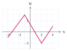
- ¿Cuánto vale \(y\) para \(x=-1\)? ¿Y para \(x=2\) y \(x=4\)?
- ¿Cuáles son el dominio y el recorrido?
- ¿Dónde es creciente y dónde decreciente? ¿Cuáles son el máximo y el mínimo?
Solución
a) 3, \(-2\) y 1. b) Dominio: de \(-4\) a 4. Recorrido: de \(-2\) a 3. c) Crece de \(-4\) a \(-1\) y de 2 a 4; decrece de \(-1\) a 2. Máximo \((-1,3)\); mínimo \((2,-2)\).
¿Cómo te ha ido?
La gráfica muestra la batería del móvil de Lucas a lo largo de un día.
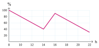
- ¿Qué batería tenía a las 14:00?
- ¿Entre qué horas estuvo cargando el móvil?
- ¿Cuál fue el valor mínimo de la batería? ¿Cuándo?
Solución
a) 40 %. b) De 14:00 a 16:00. c) 30 %, a las 22:00.
¿Cómo te ha ido?
- La temperatura de una ciudad a lo largo de un día.
- El precio de un aparcamiento que cobra por horas completas.
- La altura de una persona a lo largo de su vida.
- El número de alumnos matriculados en una clase a lo largo del curso.
Solución
a) Continua. b) No: da un salto cada hora. c) Continua. d) No: solo toma valores enteros y cambia a saltos.
¿Cómo te ha ido?
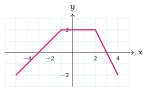
- ¿En qué puntos corta la gráfica al eje \(X\)? ¿Y al eje \(Y\)?
- ¿En qué intervalo es constante?
Solución
a) Eje \(X\): \((-3,0)\) y \((3,0)\). Eje \(Y\): \((0,2)\). b) De \(x=-1\) a \(x=2\).
¿Cómo te ha ido?
Un anuncio dice «¡Nuestras ventas se disparan!» y muestra una línea que sube mucho, pero el eje vertical no tiene números ni unidades. ¿Qué información falta para saber si las ventas han subido mucho?
Solución
La escala y las unidades del eje vertical. Sin ellas no se puede saber cuánto han subido.
¿Cómo te ha ido?
La gráfica muestra la temperatura en Astillero un día de primavera.
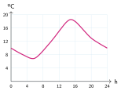
- ¿A qué hora se alcanza la temperatura mínima? ¿Cuál es?
- ¿Cuál es la temperatura máxima?
- ¿En qué intervalo de horas crece la temperatura?
Solución
- A las 6:00, con 7 ºC.
- 18 ºC.
- De 6:00 a 14:00.
¿Cómo te ha ido?
La gráfica muestra la altura de un globo aerostático durante un vuelo.
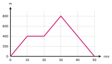
- ¿Cuáles son el dominio y el recorrido?
- ¿En qué intervalos crece, decrece o es constante?
- ¿Cuál es el máximo?
Solución
- Dominio: de 0 a 50 min. Recorrido: de 0 a 800 m.
- Crece de 0 a 10 y de 20 a 30 min; constante de 10 a 20; decrece de 30 a 50.
- 800 m a los 30 minutos.
¿Cómo te ha ido?
La gráfica muestra la distancia a casa de Marta cuando va a comprar el pan.
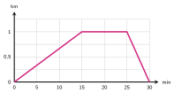
- ¿Cuánto tiempo está en la panadería?
- ¿En qué tramos es creciente la función? ¿Y decreciente?
- ¿A qué velocidad va a la ida y a la vuelta, en km/h?
Solución
a) 10 minutos. b) Creciente de 0 a 15 min; constante de 15 a 25; decreciente de 25 a 30. c) Ida, 4 km/h; vuelta, 12 km/h.
¿Cómo te ha ido?
Un aparcamiento cobra 2 € la primera hora y \(1{,}50\) € cada hora siguiente, con un máximo de 12 € al día.
- Haz una tabla con el precio de 1 a 9 horas.
- ¿A partir de qué hora se paga siempre el máximo?
Solución
a) 2; \(3{,}50\); 5; \(6{,}50\); 8; \(9{,}50\); 11; 12; 12 €. b) A partir de la octava hora.
¿Cómo te ha ido?
Lee el texto y contesta.
La etapa reina de una vuelta ciclista tiene 100 km. Sale de un pueblo de la costa a 50 m de altitud y los primeros 40 km son llanos. Del kilómetro 40 al 60 sube un puerto hasta los 900 m. Del kilómetro 60 al 80 baja hasta un valle a 200 m, y en los últimos 20 km sube a la meta, situada a 1 200 m de altitud. Supón que cada tramo tiene pendiente constante.
- Dibuja la gráfica de la altitud en función de los kilómetros recorridos.
- ¿Cuál es la altitud máxima? ¿En qué tramos la función es decreciente?
- ¿Cuántos metros suben los ciclistas en total en la etapa?
- En la subida final, ¿cuántos metros se sube por cada kilómetro? ¿Qué pendiente en porcentaje es?
Solución
a) Une los puntos \((0, 50)\), \((40, 50)\), \((60, 900)\), \((80, 200)\) y \((100, 1\,200)\). b) 1 200 m, en la meta. Decrece del km 60 al 80. c) 1 850 m. d) Un 5%.
¿Cómo te ha ido?
- Pablo sale de casa andando, se para en un quiosco y sigue andando.
- Lucía sale hacia el colegio y vuelve a casa porque se ha olvidado la mochila.
- Ana va en bicicleta a velocidad constante.
Solución
a) II. b) III. c) I.
¿Cómo te ha ido?
Iker llena la bañera: en 10 minutos el agua alcanza 40 cm. Se mete y en 1 minuto el nivel sube hasta 50 cm. Se baña durante 20 minutos, sale (en 1 minuto el nivel vuelve a 40 cm) y la bañera se vacía en 5 minutos. Dibuja la altura del agua en función del tiempo.
Solución
Une \((0,0)\), \((10,40)\), \((11,50)\), \((31,50)\), \((32,40)\) y \((37,0)\).
¿Cómo te ha ido?
La gráfica muestra la distancia a Santander de un autobús que va a Torrelavega.
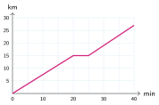
- ¿Cuántos kilómetros recorre en los primeros 20 minutos? ¿Cuánto tiempo está parado?
- ¿A qué velocidad va en el primer tramo, en km/h?
- ¿En qué tramo va más deprisa?
Solución
a) 15 km; 5 minutos. b) 45 km/h. c) En el último: 12 km en 15 minutos (48 km/h).
¿Cómo te ha ido?
La tabla da la altura de una planta de judías.
| Días | 0 | 5 | 10 | 15 | 20 | 25 |
| Altura (cm) | 0 | 2 | 7 | 15 | 22 | 25 |
- Representa los datos. ¿Tiene sentido unir los puntos?
- ¿Es una función creciente?
- ¿En qué periodo de 5 días crece más?
Solución
a) Sí, porque la altura cambia de forma continua. b) Sí. c) Del día 10 al 15 (8 cm).
¿Cómo te ha ido?
La gráfica muestra la temperatura en Reinosa un día de invierno.
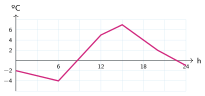
- ¿Cuáles son la temperatura máxima y la mínima? ¿A qué hora se alcanzan?
- ¿En qué intervalos crece la temperatura? ¿Y en cuáles decrece?
- ¿Cuántos grados sube la temperatura de las 6:00 a las 15:00?
Solución
a) Máxima 7 ºC a las 15:00; mínima \(-4\) ºC a las 6:00. b) Crece de 6:00 a 15:00; decrece de 0:00 a 6:00 y de 15:00 a 24:00. c) 11 ºC.
¿Cómo te ha ido?
La gráfica muestra la velocidad de un coche en un trayecto por la ciudad.
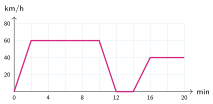
- ¿En qué intervalos va a velocidad constante?
- ¿Está parado en algún momento? ¿Cuándo?
- ¿Cuál es la velocidad máxima?
Solución
a) De 2 a 10 min (a 60 km/h) y de 16 a 20 min (a 40 km/h). b) Sí, de 12 a 14 min. c) 60 km/h.
¿Cómo te ha ido?
¿Qué valores tienen A y B? ¿Por qué engaña la gráfica?
Solución
A, 20, y B, 50. Las divisiones del eje no son iguales: B parece poco mayor que A, pero es más del doble.
¿Cómo te ha ido?
Una empresa de mensajería cobra según el peso del paquete: hasta 1 kg, 4 €; hasta 2 kg, 6 €; hasta 5 kg, 9 €, y hasta 10 kg, 15 €.
- ¿Cuánto cuesta enviar un paquete de \(1{,}5\) kg? ¿Y uno de 3 kg? ¿Y uno de 7 kg?
- Dibuja la gráfica. ¿Es continua?
Solución
a) 6 €, 9 € y 15 €. b) No: es una gráfica escalonada, con saltos en 1, 2 y 5 kg.
¿Cómo te ha ido?
Un periódico publica una gráfica de barras con las ventas de dos marcas: 1020 y 1050 unidades. El eje vertical empieza en 1000. ¿Qué impresión da la gráfica? ¿Cómo debería dibujarse?
Solución
Que la segunda vende mucho más, pero solo vende un 3% más. Debería dibujarse con el eje vertical empezando en 0.
¿Cómo te ha ido?
Un museo recibió 9 800 visitas en 2023 y 10 200 en 2024.
- Dibuja una gráfica de barras que exagere la subida y otra que la muestre de forma honesta.
- ¿Qué porcentaje han subido las visitas?
Solución
a) Exagerada: con el eje vertical empezando, por ejemplo, en 9 700. Honesta: con el eje empezando en 0. b) Alrededor de un 4 %.
¿Cómo te ha ido?
Irene y Carla hacen una carrera de 400 m. La gráfica muestra la distancia recorrida por cada una.
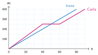
- ¿Quién gana la carrera? ¿Cuánto tarda cada una?
- ¿Quién va más deprisa al principio?
- ¿En qué momento van empatadas, aparte de la salida?
Solución
a) Irene, en 80 s; Carla tarda 90 s. b) Carla. c) A los 50 s, a 250 m de la salida.
¿Cómo te ha ido?
Dibuja la gráfica de una función con dominio de 0 a 10, recorrido de 0 a 6, dos máximos y un tramo constante. Inventa una situación que se pueda describir con ella.
Solución
Respuesta abierta.
¿Cómo te ha ido?
- El precio de \(x\) kg de peras a 1,80 €/kg.
- Un taxi que cobra 3 € fijos y 1,20 € por kilómetro.
- El perímetro de un cuadrado de lado \(x\).
- La temperatura de un horno que empieza a 20 ºC y sube 15 ºC cada minuto.
Solución
- \(y=1{,}8x\), lineal.
- \(y=1{,}2x+3\), afín.
- \(y=4x\), lineal.
- \(y=15x+20\), afín.
¿Cómo te ha ido?
Un kilo de fresas cuesta 4 €. Haz una tabla con el precio de 0, 1, 2, 3 y 4 kilos, escribe la expresión algebraica y represéntala. ¿Es una función de proporcionalidad directa?
Solución
0, 4, 8, 12 y 16 €; \(y=4x\). Sí: es una recta que pasa por el origen.
¿Cómo te ha ido?
- \(y=5x-2\)
- \(y=-3x\)
- \(y=\frac{2}{3}x+1\)
- \(y=4-x\)
Solución
- \(m=5\), \(n=-2\), creciente
- \(m=-3\), \(n=0\), decreciente
- \(m=\frac{2}{3}\), \(n=1\), creciente
- \(m=-1\), \(n=4\), decreciente
¿Cómo te ha ido?
- \(y = -2x + 5\)
- \(y = \frac{x}{3}\)
- \(y = 4\)
- \(y = 0{,}5x - 1\)
Solución
a) \(m = -2\), \(n = 5\); decreciente. b) \(m = \frac{1}{3}\), \(n = 0\); creciente. c) \(m = 0\), \(n = 4\); constante. d) \(m = 0{,}5\), \(n = -1\); creciente.
¿Cómo te ha ido?
- \((1,1)\)
- \((0,-2)\)
- \((2,5)\)
- \((-1,-5)\)
Solución
a) Sí b) Sí c) No d) Sí
¿Cómo te ha ido?
Un muelle mide 12 cm y se alarga 3 cm por cada kilo que se le cuelga. Escribe la función que da su longitud según los kilos y calcula cuánto mide con 2 kg y con 5 kg.
Solución
\(y=3x+12\); 18 cm y 27 cm.
¿Cómo te ha ido?
- Pasa por el origen y por \((2,6)\).
- Tiene pendiente \(-2\) y corta al eje \(Y\) en 5.
- Pasa por \((0,-1)\) y \((3,5)\).
Solución
a) \(y=3x\) b) \(y=-2x+5\) c) \(y=2x-1\)
¿Cómo te ha ido?
- Pasa por el origen y por \((3, -6)\).
- Tiene pendiente \(-1\) y ordenada en el origen 4.
- Pasa por \((0, 2)\) y \((3, 8)\).
- Es paralela a \(y = 3x\) y pasa por \((1, 1)\).
Solución
a) \(y = -2x\) b) \(y = -x + 4\) c) \(y = 2x + 2\) d) \(y = 3x - 2\)
¿Cómo te ha ido?
- \((0,1)\) y \((2,5)\)
- \((1,4)\) y \((3,0)\)
- \((-2,-1)\) y \((2,1)\)
Solución
- \(m=2\); \(y=2x+1\)
- \(m=-2\); \(y=-2x+6\)
- \(m=\frac{1}{2}\); \(y=\frac{1}{2}x\)
¿Cómo te ha ido?
\(y = -x + 3\) e \(y = 2x - 3\). ¿En qué punto se cortan?
Solución
Se cortan en \((2, 1)\).
¿Cómo te ha ido?
- Toda recta es la gráfica de una función.
- Si la pendiente es negativa, la función es decreciente.
- Las rectas \(y=2x+1\) e \(y=2x-3\) son paralelas.
- La parábola \(y=x^2\) tiene un máximo en \((0,0)\).
Solución
- Falso.
- Verdadero.
- Verdadero.
- Falso.
¿Cómo te ha ido?
Sofía dice que la recta \(y=-3x+2\) tiene pendiente 2 y ordenada en el origen \(-3\). Corrígela y explica cómo se distinguen.
Solución
\(m=-3\), \(n=2\)
¿Cómo te ha ido?
En GeoGebra escribe m=1, que se convierte en un deslizador, y después \(y=m x+2\). Mueve el deslizador.
- ¿Qué cambia en la recta al cambiar \(m\)?
- ¿Qué punto tienen todas en común?
- ¿Qué ocurre cuando \(m=0\)?
📐 Ábrelo en GeoGebra Prueba la actividad moviendo los puntos y los deslizadores.
Solución
- La inclinación.
- El punto \((0,2)\).
- Una recta horizontal.
¿Cómo te ha ido?
En GeoGebra escribe Recta((1,3),(4,9)) y después Pendiente(f), donde f es el nombre que GeoGebra le ha dado a la recta.
- ¿Qué ecuación tiene la recta? ¿Cuál es su pendiente?
- Comprueba con la ecuación si el punto \((-2, -3)\) está en la recta. Dibújalo para confirmarlo.
📐 Ábrelo en GeoGebra Prueba la actividad moviendo los puntos y los deslizadores.
Solución
a) \(y = 2x + 1\); pendiente 2. b) Sí.
¿Cómo te ha ido?
Una compañía de teléfono cobra 8 € al mes más 0,05 € por cada minuto de llamada. Escribe la función que relaciona el precio con los minutos. ¿Cuánto se paga por 120 minutos? ¿Cuántos minutos se han hablado si la factura es de 15 €?
Solución
\(y=0{,}05x+8\); 14 €; 140 minutos.
¿Cómo te ha ido?
Un depósito con 600 litros se vacía a razón de 40 litros por minuto. Escribe la función que da los litros que quedan en función del tiempo. ¿Cuánto tarda en vaciarse?
Solución
\(y=600-40x\); 15 minutos.
¿Cómo te ha ido?
Un taxi cobra \(3{,}50\) € de bajada de bandera y \(1{,}20\) € por kilómetro.
- Escribe la función que da el precio según los kilómetros.
- ¿Cuánto cuesta un viaje de 10 km?
- Si un viaje ha costado \(23{,}90\) €, ¿cuántos kilómetros tenía?
Solución
a) \(y = 1{,}2x + 3{,}5\) b) \(15{,}50\) € c) 17 km
¿Cómo te ha ido?
Una casa tiene un depósito con 1 000 litros de gasoil para la calefacción y gasta 25 litros al día.
- Escribe la función que da los litros que quedan según los días.
- ¿Cuántos días dura el gasoil?
- ¿Qué día quedarán 300 litros?
Solución
a) \(y = 1\,000 - 25x\) b) 40 días. c) El día 28.
¿Cómo te ha ido?
Para pasar de grados Celsius a Fahrenheit se usa la función \(F = 1{,}8C + 32\).
- ¿Cuántos grados Fahrenheit son 20 ºC? ¿Y 100 ºC?
- ¿A qué temperatura coinciden los dos valores?
Solución
a) 68 ºF y 212 ºF. b) A \(-40\) grados.
¿Cómo te ha ido?
La compañía A cobra 10 € al mes más 0,05 € por minuto y la compañía B, 0,10 € por minuto sin cuota.
- Escribe las dos funciones y represéntalas en los mismos ejes.
- ¿Para cuántos minutos cuestan lo mismo?
- ¿Qué compañía conviene si se hablan 150 minutos? ¿Y 300?
Solución
- \(y=10+0{,}05x\); \(y=0{,}1x\)
- 200 minutos (20 €).
- Con 150 min, B; con 300 min, A.
¿Cómo te ha ido?
- \(y=2x-6\)
- \(y=-3x+9\)
- \(y=\frac{1}{2}x+2\)
Solución
a) \((0,-6)\) y \((3,0)\). b) \((0,9)\) y \((3,0)\). c) \((0,2)\) y \((-4,0)\).
¿Cómo te ha ido?
Un depósito con 800 L de agua se vacía a razón de 50 L por minuto.
- Escribe la función que da los litros que quedan en función del tiempo.
- ¿Cuánto tarda en vaciarse? ¿Cuál es el dominio de la función?
- Represéntala. ¿Es creciente o decreciente?
Solución
- \(y=800-50x\)
- 16 minutos. Dominio: de 0 a 16.
- Decreciente; pendiente \(-50\).
¿Cómo te ha ido?
Inventa una situación que se pueda describir con la función \(y=25-5x\). Explica qué significan el 25 y el \(-5\), y qué valores de \(x\) tienen sentido.
Solución
Respuesta abierta. Por ejemplo: tengo 25 € y gasto 5 € cada semana; de \(x=0\) a \(x=5\).
¿Cómo te ha ido?
Una empresa de alquiler de coches ofrece dos tarifas por día: A, 40 € sin límite de kilómetros; B, 25 € más \(0{,}10\) € por kilómetro.
- Escribe las dos funciones y represéntalas.
- ¿Con cuántos kilómetros cuestan lo mismo? ¿Qué tarifa conviene para un viaje de 220 km?
Solución
a) A: \(y = 40\). B: \(y = 25 + 0{,}1x\). b) Con 150 km. Para 220 km, la A.
¿Cómo te ha ido?
- ¿Cómo son dos rectas con la misma pendiente y distinta ordenada en el origen?
- ¿Qué tienen en común dos rectas con la misma ordenada en el origen?
- ¿Pasa la recta \(y = 2x + 1\) por el punto \((3, 7)\)? ¿Y por \((-1, 1)\)?
Solución
a) Paralelas. b) Se cortan en el mismo punto del eje Y. c) Por \((3, 7)\) sí; por \((-1, 1)\) no.
¿Cómo te ha ido?
Lee el texto y contesta.
Martín nació con \(3{,}2\) kg. En las revisiones del pediatra pesó \(4{,}1\) kg al mes, \(5{,}0\) kg a los dos meses y \(5{,}9\) kg a los tres meses. Su padre ha hecho la cuenta y dice que, si sigue así, al año pesará más de 14 kg. La pediatra le explica que los bebés engordan muy deprisa al principio y luego cada vez más despacio; de hecho, a los seis meses Martín pesó \(7{,}6\) kg.
- ¿Cuánto engordó cada mes durante los tres primeros meses? Escribe la función afín que lo describe.
- ¿Qué peso predice esa función para los 6 meses y para los 12 meses?
- ¿Funciona la fórmula a los 6 meses? ¿Por qué no se debe usar para predecir el peso al año?
Solución
a) \(0{,}9\) kg al mes: \(y = 3{,}2 + 0{,}9x\). b) \(8{,}6\) kg y 14 kg. c) No: predice \(8{,}6\) kg y pesó \(7{,}6\) kg.
¿Cómo te ha ido?
- \(x=4\)
- \(x=-5\)
- \(x=0{,}3\)
- \(x=-\frac{1}{2}\)
Solución
a) 16 b) 25 c) \(0{,}09\) d) \(\frac{1}{4}\)
¿Cómo te ha ido?
- \((0,-3)\)
- \((2,1)\)
- \((-1,-4)\)
- \((-3,6)\)
Solución
a) Sí. b) Sí. c) No. d) Sí.
¿Cómo te ha ido?
- \(y=5x^2\)
- \(y=-2x^2\)
- \(y=x^2-4\)
- \(y=-x^2+3\)
Solución
a) Arriba; \((0,0)\), mínimo. b) Abajo; \((0,0)\), máximo. c) Arriba; \((0,-4)\), mínimo. d) Abajo; \((0,3)\), máximo.
¿Cómo te ha ido?
- \(y=3x-1\)
- \(y=x^2\)
- \(y=2x^2+1\)
- \(y=-\frac{x}{4}\)
- \(y=-3x^2\)
- \(y=7\)
Solución
Rectas: a), d) y f). Parábolas: b), c) y e).
¿Cómo te ha ido?
| \(x\) | \(-3\) | \(-2\) | \(-1\) | 0 | 1 | 2 | 3 |
| \(y\) | 2 | 3 | 6 | 11 |
Solución
11, 6, 3, 2, 3, 6, 11.
¿Cómo te ha ido?
Diego dice que, en la parábola \(y=x^2\), para \(x=-3\) se obtiene \(y=-9\). Corrígelo.
Solución
\((-3)^2=9\): el cuadrado de un número negativo es positivo. El punto es \((-3,9)\).
¿Cómo te ha ido?
- \(y=x^2+1\)
- \(y=-x^2\)
Solución
- \(5,\,2,\,1,\,2,\,5\). Vértice \((0,1)\), mínimo.
- \(-4,\,-1,\,0,\,-1,\,-4\). Vértice \((0,0)\), máximo.
¿Cómo te ha ido?
Completa la tabla de \(y=-x^2+4\) para \(x=-3,-2,-1,0,1,2,3\) y dibuja la gráfica. ¿Dónde está el vértice? ¿Es un máximo o un mínimo? ¿En qué puntos corta al eje \(X\)?
Solución
\(-5,0,3,4,3,0,-5\). Vértice \((0,4)\), máximo. Corta al eje \(X\) en \((-2,0)\) y \((2,0)\).
¿Cómo te ha ido?
\(y = x^2 - 2x\). ¿Dónde está el vértice? ¿Cuál es su eje de simetría?
Solución
3, 0, \(-1\), 0, 3. Vértice \((1, -1)\). Eje: \(x = 1\).
¿Cómo te ha ido?
Escribe en la columna A los números del \(-3\) al 3 y en B1 la fórmula =A1^2-4. Arrastra y crea un gráfico de dispersión con líneas suavizadas.
- Escribe los valores de la columna B.
- ¿En qué puntos corta la gráfica al eje X? ¿Cuál es el valor mínimo?
Solución
a) 5, 0, \(-3\), \(-4\), \(-3\), 0, 5. b) En \(x = -2\) y \(x = 2\). El mínimo es \(-4\), en \(x = 0\).
¿Cómo te ha ido?
\(y=2x^2-1\). ¿Dónde está el vértice? ¿Es un máximo o un mínimo?
Solución
7, 1, \(-1\), 1, 7. Vértice \((0,-1)\), mínimo.
¿Cómo te ha ido?
\(y=-\frac{1}{2}x^2\). ¿Dónde está el vértice? ¿Es un máximo o un mínimo?
Solución
\(-8\), \(-2\), 0, \(-2\), \(-8\). Vértice \((0,0)\), máximo.
¿Cómo te ha ido?
\(y=(x-2)^2\). ¿Dónde está el vértice? ¿Cuál es su eje de simetría? ¿En qué se diferencia de \(y=x^2\)?
Solución
4, 1, 0, 1, 4. Vértice \((2,0)\). Eje: \(x=2\). Es la misma parábola desplazada 2 unidades a la derecha.
¿Cómo te ha ido?
Completa la tabla de \(y=x^2+2x-3\) para \(x=-4,-3,-2,-1,0,1,2\) y dibuja la gráfica. ¿Dónde está el vértice? ¿En qué puntos corta a los ejes?
Solución
5, 0, \(-3\), \(-4\), \(-3\), 0, 5. Vértice \((-1,-4)\). Eje \(X\): \((-3,0)\) y \((1,0)\). Eje \(Y\): \((0,-3)\).
¿Cómo te ha ido?
- \(y=x^2-9\)
- \(y=x^2+4\)
- \(y=-x^2+1\)
Solución
a) \((0,-9)\); \((-3,0)\) y \((3,0)\). b) \((0,4)\); no corta al eje \(X\). c) \((0,1)\); \((-1,0)\) y \((1,0)\).
¿Cómo te ha ido?
Un jardinero planta césped en parterres cuadrados de \(x\) metros de lado. El césped cuesta 6 € el metro cuadrado.
- Escribe el coste en función del lado y haz una tabla para \(x=1,2,3,4\).
- ¿Cuánto mide el lado de un parterre que ha costado 150 €?
Solución
a) \(y=6x^2\): 6, 24, 54 y 96 €. b) 5 m.
¿Cómo te ha ido?
En carretera seca, la distancia de frenado de un coche, en metros, es aproximadamente \(d=0{,}01v^2\), con la velocidad \(v\) en km/h.
- Haz una tabla para \(v=20,40,60,80,100,120\).
- ¿Qué le pasa a la distancia de frenado al duplicar la velocidad?
Solución
a) 4, 16, 36, 64, 100 y 144 m. b) Se multiplica por 4.
¿Cómo te ha ido?
- La parábola \(y=-3x^2\) tiene un máximo.
- Las parábolas \(y=x^2\) e \(y=x^2+5\) tienen el mismo vértice.
- Todas las parábolas \(y=ax^2\) pasan por el origen.
- La función \(y=x^2\) es creciente para todos los valores de \(x\).
Solución
a) Verdadero. b) Falso: \((0,0)\) y \((0,5)\). c) Verdadero. d) Falso: decrece para \(x<0\).
¿Cómo te ha ido?
En GeoGebra escribe a=1, que se convierte en un deslizador, y después \(y=a x^2\). Mueve el deslizador entre \(-3\) y 3.
- ¿Qué pasa cuando \(a\) es negativo?
- ¿Cómo cambia la parábola al aumentar \(a\)?
- ¿Qué se obtiene cuando \(a=0\)?
📐 Ábrelo en GeoGebra Prueba la actividad moviendo los puntos y los deslizadores.
Solución
a) Se abre hacia abajo. b) Se hace más cerrada. c) La recta \(y=0\), el eje \(X\).
¿Cómo te ha ido?
Se lanza una pelota hacia arriba. Su altura en metros a los \(t\) segundos es \(h = 20t - 5t^2\).
- Haz una tabla para \(t = 0, 1, 2, 3, 4\) y dibuja la gráfica.
- ¿Qué altura máxima alcanza y cuándo?
- ¿Cuándo vuelve al suelo?
Solución
a) 0, 15, 20, 15, 0. b) 20 m a los 2 segundos. c) A los 4 segundos.
¿Cómo te ha ido?
Desde lo alto de un acantilado de 45 m en Liencres se deja caer una piedra. Su altura sobre el agua a los \(t\) segundos es \(h=45-5t^2\).
- Haz una tabla para \(t=0,1,2,3\).
- ¿Cuándo llega la piedra al agua?
- ¿Recorre la misma distancia en cada segundo?
Solución
a) 45, 40, 25 y 0 m. b) A los 3 segundos. c) No: 5, 15 y 25 m; cae cada vez más deprisa.
¿Cómo te ha ido?
Haz una tabla para \(x=0,1,2,3,4,5\) de las funciones \(y=x^2\) e \(y=2x\) y represéntalas en los mismos ejes.
- ¿En qué puntos se cortan?
- ¿Para qué valores positivos de \(x\) es mayor \(x^2\) que \(2x\)?
Solución
\(y=x^2\): 0, 1, 4, 9, 16, 25. \(y=2x\): 0, 2, 4, 6, 8, 10. a) En \((0,0)\) y \((2,4)\). b) Para \(x>2\).
¿Cómo te ha ido?
🧩 Paso a paso
Así se resuelven los ejercicios tipo de la unidad. Cada bloque es una orden, como en Scratch: los bloques se leen de arriba abajo y los que tienen forma de C se repiten o solo se hacen si se cumple la condición.